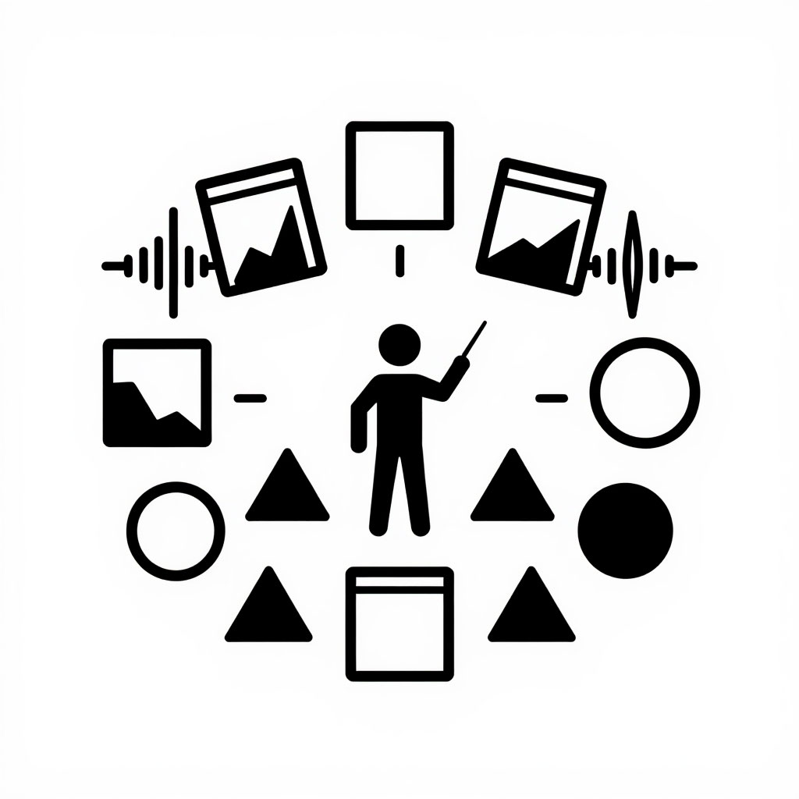
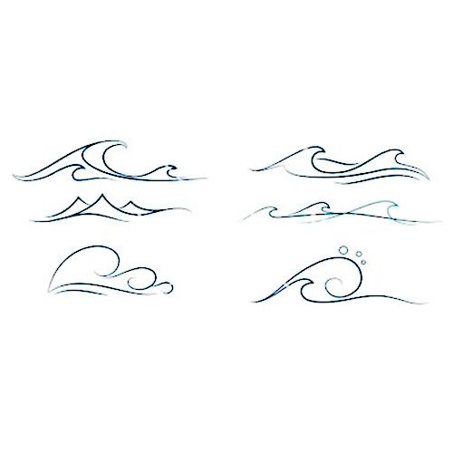

ОС Время объединит все временные режимы экосистемы: от равновесия до освобождения. Позволит переключать темп диалога глобально.
ОС Время — это не просто ещё одна ОС, а мета-уровень. Она берёт временные режимы всех существующих ОС и позволяет управлять ими как единым оркестром. Вы сможете замедлять диалог до паузы (silence) или ускорять до ритма (resonance), не переключая ОС.
Зачем это нужно в реальной жизни:
В основе — вестибулярное время proto, которое никогда не останавливается. ОС Время будет работать как дирижёр, управляя скоростью и плотностью диалогового потока.
Примеры управления темпом
Что можно будет сделать: «Замедли диалог до темноты. Пусть каждое слово созревает 10 секунд.» — система перейдёт в режим dark, замедлит ответы, добавит паузы.

Что можно будет сделать: «Ускорь до резонанса, давай быстрый брейншторм.» — LLM будет отвечать коротко, ритмично, без пауз.
Что можно будет сделать: «Синхронизируй нас с общим ритмом: 2 секунды на фразу.» — все участники (человек и ИИ) подстраиваются под единый темп.
Появятся с выходом ОС Время
/tempo – показать текущий временной режим диалога/slow – замедлить темп (перейти в dark/silence)/fast – ускорить темп (перейти в resonance/light)/pause N – сделать паузу на N секунд (silence)/sync – синхронизировать участников на общем ритме/reset time – вернуться к базовому темпу (proto)Как управление темпом меняет восприятие
Пользователь: «Я так устал, что не могу собраться с мыслями. Давай очень медленно, пожалуйста.»
Time (ОС): «Замедляю до темноты. Каждое слово будет появляться через 3 секунды. Ты можешь дышать в паузах.»
Медленный диалог, пользователь успевает осмыслить.
Пользователь (через 10 минут): «Ок, теперь мне нужно много идей быстро. Ускорь.»
Time: «Ускоряю до резонанса. Отвечаю коротко, без пауз. Погнали.»
Быстрый поток ассоциаций, рождаются десятки идей.
После завершения ОС Критик. Ориентировочно через несколько недель. Следите за GitHub и сайтом.
Да, вручную: вы можете просить LLM «отвечай медленнее» или «давай быстрее». ОС Время сделает это системным, с командами и обратной связью.
В планах — поддержка синхронизации нескольких участников (например, в общем чате). Но сначала будет версия для одного пользователя.
Бесплатно, как и вся экосистема. Принцип «лишь бы не во вред» сохраняется.
Пошаговая инструкция
user_settings.json (он нужен, чтобы LLM поняла, как активировать ОС).
Скачать user_settings.json
user_settings.json в диалог и напишите: «Активируй ОС time».
Когда ядро будет готово, LLM сама попросит вставить его. Пока можно следить за выходом ядра на GitHub.Совет: Если вы впервые в экосистеме, нажмите «Как начать?» в меню сверху — там есть общая инструкция и ответы на частые вопросы.